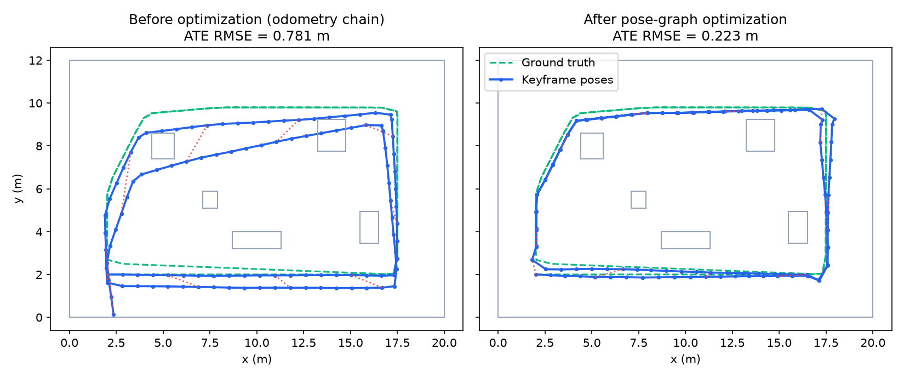

7.1从"链"到"图"：为什么链条必然歪
第 5 章结束时的状态是：相邻关键帧之间有了高精度的相对位姿测量 $z_{k,k+1}$。 把它们首尾相乘得到"链式估计"：$T_k = T_0\,z_{0,1}\,z_{1,2}\cdots z_{k-1,k}$。 但每节链条都有 ±1 cm 级别的独立误差，$N$ 节之后误差按 $\sqrt{N}$ 累积—— 和第 4 章里程计漂移是同一个故事，只是慢了 3~5 倍。只要还是"链"，误差就没有消失的出口。
出口在哪里？——回环（loop closure）。机器人跑第二圈重游旧地时， "此刻的扫描"和"几分钟前的老扫描"做 ICP 能对上（第 5 章的方法）， 这相当于获得了一条跨越时空的约束："你现在站的位置"和"很久以前的位置"必须重合。 把它塞进链条，链就成了环；优化这个环，所有累积误差被"平均地"摊回每一节。
7.2数学表述：一个最小二乘问题
节点：位姿 $T_i \in SE(2)$（初值用链式估计）。边：三元组 $(i, j, z_{ij}, \Omega_{ij})$， 含义是"ICP 测得从 $i$ 看 $j$ 的相对位姿是 $z_{ij}$，信任程度是信息矩阵 $\Omega_{ij}$（对角阵，数字越大越信任）"。 优化目标是让每条边都能被尽量满足：
残差公式值得逐块读一遍：$T_i^{-1}T_j$ 是"当前估计下 i→j 的相对位姿"（第 2 章的组合律）； $Z_{ij}^{-1}$ 把 ICP 的测量"除"进去——如果估计完美，$Z^{-1}T_i^{-1}T_j = I$，Log 变回零向量。 残差是 3 维向量（x, y, θ 的差），单位分别是米、米、弧度—— 所以信息矩阵的对角元不能乱给：角度 1° 的误差 ≈ 平移 1 cm×(π/180·L) 的量级换算， 课程用 $\mathrm{diag}(400, 400, 10^4)$（σ ≈ 5 cm / 5 cm / 0.6°）。
位姿 $(x,y,\theta)$ 直接相减在角度上会出问题（±π 回绕 + 不满足群结构）。 $\mathrm{Log}(Z^{-1}T_i^{-1}T_j)$ 输出的 3 个数是"指数坐标"下的差—— 在 SE(2) 的弯曲空间里取的"测地距离"，小误差时它就是普通的差， 大误差时也不会给出荒谬的角度（始终 wrap 到 ±π）。这是第 2 章 Exp/Log 工具的正确用法。
7.3Gauss-Newton：每一步都在"局部拉直"
目标函数对位姿是非线性的（乘法结构 + Log），所以用第 2 章的 GN 迭代。 每一轮：
- 算出每条边的残差 $e_{ij}$ 和雅可比 $J_{ij} = \partial e_{ij}/\partial T$；
- 按"边-节点"对应关系把 $J^\top\Omega J$ 累加进大矩阵 $H$（只填 3×3 的对角块和耦合块）—— 这就是 H 的稀疏结构：节点 a 和 b 只在与它们相连的边里相遇；
- 解 $H\Delta = -b$；
- 每个节点右侧更新 $T_k \leftarrow T_k\,\mathrm{Exp}(\Delta_k)$（第 2 章的指数映射）。
两个工程要点：(1) 必须固定一个节点（通常 $T_0$）——否则整张图可以整体平移旋转而不改变任何残差 （解空间的"规范自由度"，gauge freedom），$H$ 奇异。课程在 $H$ 的节点 0 对角块上加 $10^6$ 的惩罚， 等价于"把第一帧钉在世界原点"。(2) 雅可比可以用数值差分—— 每个位姿只有 3 个分量，扰动一次重算残差即可，教学期不推导解析雅可比完全可行 （课程代码就是这么做的，性能足够；工业实现用解析雅可比 + 稀疏 Cholesky）。
class PoseGraph:
def residual(self, i, j, z):
"""e = Log( Z⁻¹ · T_i⁻¹ · T_j )"""
T = inv(se2_mat(z)) @ inv(self.nodes[i]) @ self.nodes[j]
e = se2_log(T)
e[2] = wrap_angle(e[2])
return e
def optimize(self, max_iter=20, tol=1e-5):
n = len(self.nodes)
for it in range(max_iter):
H = np.zeros((3*n, 3*n)); b = np.zeros(3*n); cost = 0
for (i, j, z, info) in self.edges:
e0 = self.residual(i, j, z)
cost += e0 @ info @ e0
Ji = self._jac_numeric(i, j, z) # 数值雅可比 3×3
Jj = self._jac_numeric(j, j, z)
# H 的块结构：每条边只连接 i 和 j —— 稀疏性的来源
H[3*i:3*i+3, 3*i:3*i+3] += Ji.T @ info @ Ji
H[3*j:3*j+3, 3*j:3*j+3] += Jj.T @ info @ Jj
H[3*i:3*i+3, 3*j:3*j+3] += Ji.T @ info @ Jj
H[3*j:3*j+3, 3*i:3*i+3] += Jj.T @ info @ Ji
b[3*i:3*i+3] += Ji.T @ info @ e0
b[3*j:3*j+3] += Jj.T @ info @ e0
H[0:3, 0:3] += 1e6 * np.eye(3) # 固定节点 0（锚）
delta = np.linalg.solve(H, -b)
for k in range(n):
self.nodes[k] = self.nodes[k] @ se2_exp(delta[3*k:3*k+3])
if np.max(np.abs(delta)) < tol:
break
return cost_history7.4回环检测：怎么知道"我回到了老地方"？
位姿图优化只是求解器；它吃的"回环边"得有人喂。课程采用几何 + 几何的两步验证 （工业界还有外观法：扫描描述子/词袋，见第 11 章）：
- 候选筛选（便宜）：当前关键帧与所有"时间上隔得远（≥20 帧）、 估计位置接近（≤1.5 m）"的老关键帧配对。用当前链式估计（比原始里程计准）做距离判断。
- 几何验证（较贵）：对每个候选做一次 ICP（老扫描 vs 新扫描）， RMSE < 0.12 m 才承认回环成立，把配准结果作为回环边加入图。 RMSE 门槛挡住了"两个长得像的墙角"——真回环的对齐残差天然低（同一面墙！）。
一条错误的回环边（比如把两个相似的墙角配成一对）会把地图"对折"——所有节点被强行扭到错误位置， 且因为回环边信息量大，优化器无法拒绝它。防御手段：收紧 RMSE 门槛、要求重叠点数充足、 每次只取"最强"的一个候选（课程做法）、工业级再叠加外观验证 + 一致性检查（多假设树）。

7.5为什么工业实现用"稀疏"求解器？
课程用稠密 np.linalg.solve——110 个节点才 330×330，毫秒级，完全够。
但真实机器人一次建图几万节点，稠密求逆 $O(N^3)$ 就吃不消了。看 H 的结构：
非零块的位置 = 边的分布。稀疏 Cholesky / 分解-消元（如 g2o、GTSAM、Ceres） 利用这个结构把单次求解降到近似线性复杂度；再加上增量式平滑（iSAM2：只重算受新边影响的子块）， 才有了实时的工业后端。当你把课程代码跑到"1 万关键帧卡顿"时，就知道该读哪本书了（第 11 章书单）。
7.6动手实验
- 在
run_slam.py里注释掉回环边（把pg.add_edge(b, a, ...)那行删掉）： 优化将无事可做（cost 一开始就是 0），地图退化成"ICP 链"版本——鬼影立刻回来。 - 把回环边的信息矩阵放大 100 倍（
info_loop = diag([3e4, 3e4, 5e5])）： 优化结果会向回环边倾斜——过强的回环信任会"掰弯"原本正确的链式估计。 权重是优化的方向盘。 - 把
se2_exp换成"直接加 delta"（$T += \Delta$ 的错误实现）， 观察大回环时优化发散——体感一次"李群为什么不能当向量用"。
- 能画出位姿图的节点/边/回环边示意，说出弹簧网类比
- 能解释残差 $e=\mathrm{Log}(Z^{-1}T_i^{-1}T_j)$ 每一块的含义
- 知道 H 为什么稀疏、为什么必须固定节点 0
- 做过实验 1/2，亲眼见过"权重是方向盘"